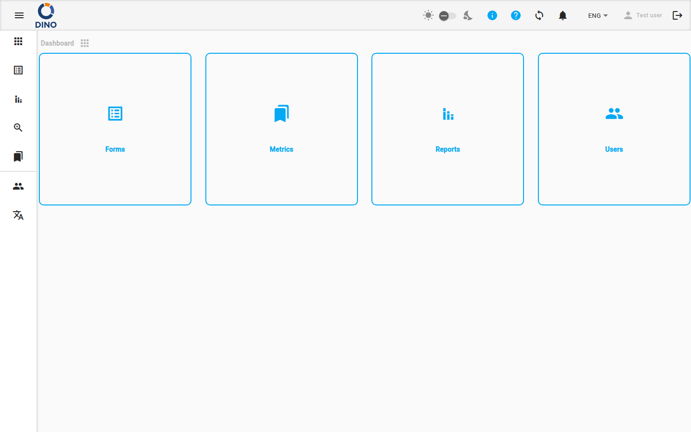
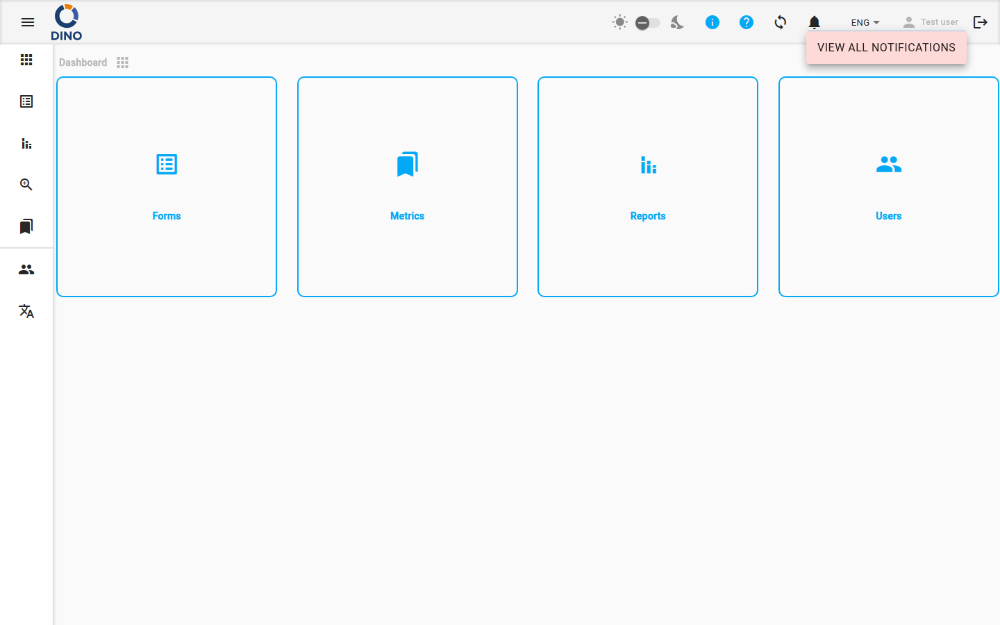

Navegação e Interface
A interface do Dino consiste em uma barra de ferramentas superior e um menu de navegação lateral que estão presentes em todas as páginas após o login.

Navegação Lateral
O menu lateral permite que você navegue entre as principais áreas do aplicativo.
Seções padrão (visíveis para todos os usuários autenticados):
| Seção | Descrição |
|---|---|
| Painel | A tela inicial. |
| Formulários | Formulários de coleta de dados e envios. |
| Relatórios | Relatórios gerados. |
| Agregação | Visão unificada dos envios de vários formulários. |
| Métricas | Dados de referência (projetos, locais, organizações, etc.). (Oculto para usuários convidados.) |
| IA | Assistente de IA (DinoGPT). |
Seções de administração (visíveis apenas para administradores, exibidas abaixo de um divisor):
| Seção | Descrição |
|---|---|
| Usuários | Contas de usuário e grupos de permissão. |
| Idiomas | Gerenciamento de tradução da interface. |
Em telas grandes, o menu fica sempre visível à esquerda. Em telas menores, ele é recolhido e pode ser aberto com o botão de menu (ícone de hambúrguer) na barra de ferramentas superior. Em qualquer tamanho de tela, clique no botão de menu para expandir os rótulos do menu ou recolhê-los apenas para ícones.
Barra de Ferramentas Superior
A barra de ferramentas no topo da tela contém os seguintes controles, da esquerda para a direita:
- Alternar menu — abre ou recolhe o menu lateral.
- Logotipo — exibe o logotipo da sua organização.
- Indicador de nova versão — um ícone de download aparece quando uma nova versão do Dino está disponível. Clique para recarregar o aplicativo e aplicar a atualização.
- Créditos DINO-AI — mostra o saldo restante de créditos de IA como um emblema. Clique para abrir a Área do Usuário no painel de Créditos. (Visível apenas se uma chave de API DINO-AI foi configurada.)
- Alternar modo escuro/claro — um ícone de sol, um controle deslizante e um ícone de lua. Use o controle deslizante para alternar entre os temas claro e escuro. (Oculto no celular — use a Área do Usuário.)
- Ícone de informações — passe o mouse para ver as informações de versão desta instalação.
- Ícone de ajuda — abre a playlist de tutoriais do Dino em uma nova guia.
- Ícone de configurações — abre a Área do Usuário.
- Ícone de sincronização — mostra o status atual da sincronização de dados. Clique para acionar uma sincronização manual.
- Sino de notificações — mostra o número de notificações não lidas como um emblema. O sino toca quando novas notificações chegam. Veja Notificações abaixo.
- Seletor de idioma — altera o idioma da interface.
- Nome do usuário — clique para abrir a Área do Usuário.
- Ícone de sair — clique para fazer logout. O ícone fica esmaecido enquanto uma sincronização está em andamento ou quando o dispositivo está offline; o logout não está disponível nesses estados.
Sincronização de Dados
O Dino sincroniza seus dados com o servidor em segundo plano. O ícone de sincronização na barra de ferramentas mostra o estado atual:
| Ícone | Significado |
|---|---|
sync (estático) |
Todos os dados estão atualizados. |
sync_problem (pulsando) |
Você tem alterações locais que ainda não foram sincronizadas. Clique para acionar uma sincronização. |
sync (girando) |
Uma sincronização está em andamento. |
sync_disabled |
O dispositivo está offline; a sincronização não está disponível. |
sync com emblema ! |
Foi encontrado um problema de sincronização. Verifique suas notificações para obter detalhes. |
Quando uma sincronização é concluída, uma notificação aparece brevemente na parte inferior da tela:
- "Sincronização concluída" — todos os dados sincronizados com sucesso.
- "Sincronização concluída com erros. Não foi possível sincronizar: [itens]. Verifique suas notificações." — uma ou mais coletas de dados não puderam ser sincronizadas. Uma notificação também é criada na sua lista de notificações.
Notificações
Clique no ícone de sino na barra de ferramentas para abrir o menu suspenso de notificações. O emblema no sino mostra o número de mensagens não lidas.

No menu suspenso, você pode:
- Clicar em uma notificação para marcá-la como lida.
- Clicar no botão de seta em uma notificação (se presente) para navegar diretamente para a área relevante do aplicativo.
- Marcar todas como lidas — marca todas as notificações atuais como lidas.
- Ver todas as notificações — navega para a página completa de Notificações.
Área do Usuário
Clique no ícone de configurações, no seu nome de usuário ou no contador de Créditos DINO-AI para abrir a caixa de diálogo da Área do Usuário. Ela mostra seu nome completo e endereço de e-mail no topo.

Alterar Senha
- Digite sua Senha Atual.
- Digite uma Nova Senha.
- Confirme a Nova Senha.
- Clique no botão de seta para salvar.
Uma mensagem de erro aparecerá se a senha atual estiver incorreta ou se as novas senhas não coincidirem.
Chaves de API
Visualize ou defina sua Chave de API DINO-AI. Depois que uma chave válida for armazenada, ela será exibida em modo somente leitura. Use o ícone de olho para mostrar ou ocultar a chave e o ícone de cópia para copiá-la para a área de transferência.
Créditos
Mostra seu saldo atual de créditos DINO-AI. Se uma integração de pagamento estiver configurada, um botão Adicionar mais estará disponível para comprar créditos adicionais.
Visibilidade
Esta seção só fica visível quando uma chave de API DINO-AI foi configurada.
Tema DINO
Personalize o esquema de cores do aplicativo:
- Cor primária, Cor de destaque, Cor de aviso — clique nos campos de cor para abrir um seletor de cores.
- Nome do preset — digite ou selecione um nome para salvar ou carregar um preset de cores.
- Clique em Salvar para salvar as cores atuais como um preset nomeado, ou em Carregar para aplicar um preset salvo.
No celular, um alternador de modo escuro/claro também aparece aqui.
Tutoriais
Clique em Iniciar Tour pelo Dino para reiniciar o tour guiado do aplicativo desde o início.
Disponibilidade
Esta seção só é exibida se o tour guiado estiver configurado na sua instalação.
Backup e Restauração
(Apenas administradores, se ativado.)
- Fazer Backup dos Dados — baixa uma exportação completa do banco de dados do aplicativo como um arquivo JSON.
- Restaurar Dados — envia um arquivo JSON exportado anteriormente para restaurar o banco de dados.
Cuidado com a Restauração
Restaurar dados substituirá o banco de dados atual. Esta ação não pode ser desfeita.